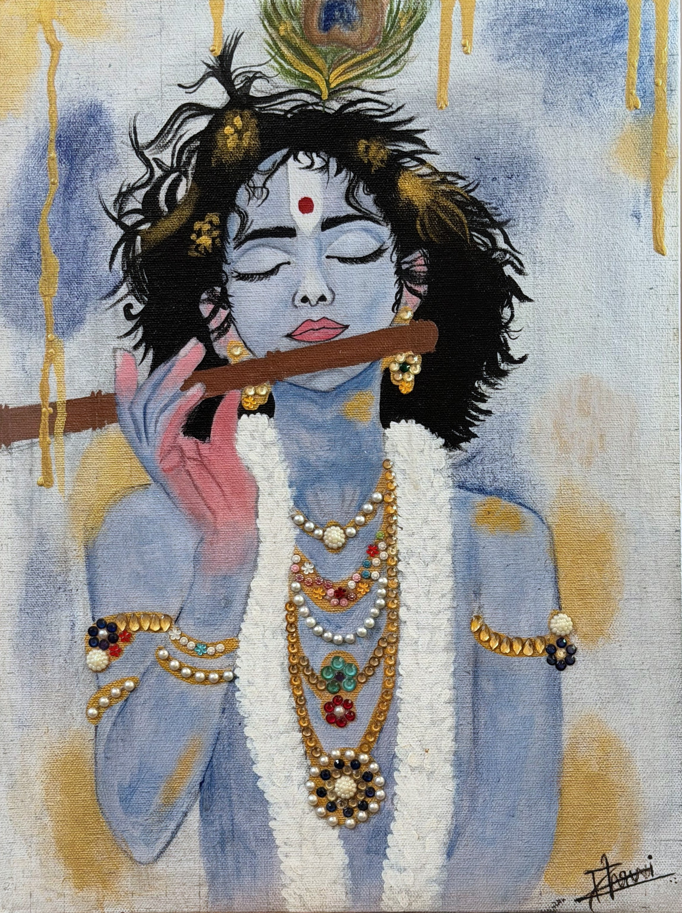

Thank
You
Thank you for taking the time to review this portfolio. Every line here was made with intention — I hope it communicates not just skill, but a way of seeing.
Name
Dhruvi Patel
Phone
+91 96620 30433

Scan for PDF Portfolio
Design Portfolio
Sketches • Visual Studies • Design Thinking
Observing, Interpreting, Creating.

I am a designer who believes that observation precedes creation. My practice begins not at the drawing table, but in the streets, markets, and quiet corners of everyday life — studying how light falls, how shadows reveal structure, and how geometry underlies the organic.
Sketching is how I think. Each line is a decision; each composition, a question. Through visual storytelling, I translate moments of quiet observation into works that carry both intellectual rigour and emotional honesty.
I am drawn to the space between seeing and making — that moment of interpretation where a raw visual experience becomes a considered design response.
Use arrow keys or swipe to navigate
Click to enlarge
These are not photographs — they are visual notes. Each image is a question asked of the world; a pattern observed, a rhythm felt, a structure revealed.
The repeating geometry of balconies revealed patterns that later influenced perspective studies in the Urban Form series.
Caustic patterns formed by light refracting through glass. A study in how indirect illumination creates movement and depth on flat surfaces.
Tree bark observed as a record of time — growth, stress, and adaptation written in vertical and horizontal marks. Surface as autobiography.
The cast shadow of a simple building block revealed how light constructs secondary compositions on the ground — geometry answering geometry.
Leaf venation as information architecture. The branching pattern distributes resources efficiently — a structural logic that mirrors network design principles.
A staircase as typographic rhythm — regular intervals ascending, each step a beat, the whole a composition of controlled repetition and implied motion.
Thank you for taking the time to review this portfolio. Every line here was made with intention — I hope it communicates not just skill, but a way of seeing.
Name
Dhruvi Patel
Phone
+91 96620 30433
Scan for PDF Portfolio